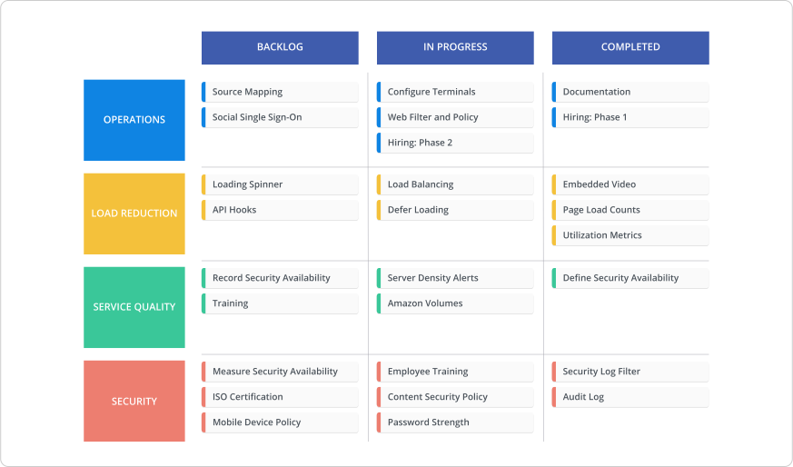
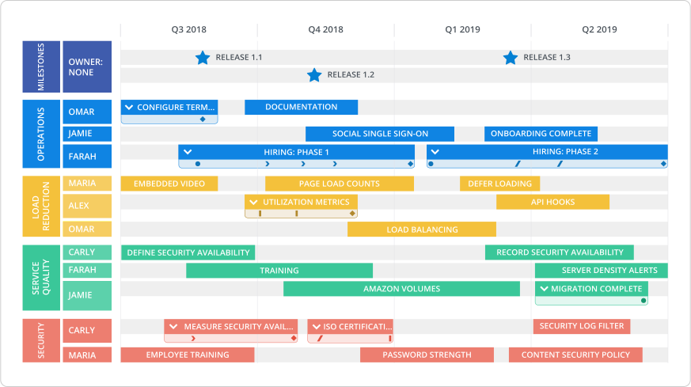

Here’s a step-by-step process to create a technology roadmap—no matter which way you visualize it.
We offered a couple of ways to approach a technology roadmap in the previous chapter, but here we do a deeper-dive into how to get to those final products. Whether you end up with a Swimlane or Timeline View of your technology roadmap (which are both available in our template library btw), you’ll encounter similar questions and points of consideration when creating a technology roadmap.
Get our guide of ten powerful (& practical) ways to build your technology roadmap. Download it here.
1. Establish the why
Knowing the why = having a purpose to your roadmap. With the “why” top of mind you’ll know what to include on your technology roadmap and create a doc with an end-goal—rather than an aimless document that your CEO is asking for. So, first ask yourself: Why do I need this technology roadmap?
While a product roadmap is all about tracking your product features, improvements and strategy, a technology roadmap is all about strategizing the work that supports your product and organization. Technology roadmaps organize the infrastructure-related technologies and tools that need to be put in place to make sure product-related shit actually happens. Yes, that means there can be overlap between your product and technology roadmaps (after all, technology is almost always going to be essential to your product strategy), but that doesn’t mean every single one of your tech-related projects belongs on the product roadmap and vice-versa.
Basically, if you’re finding there are a bunch of infrastructure-related projects you want to put on your product roadmap that don’t fit anywhere, it’s usually time to implement a technology roadmap. It should be a plan that demonstrates how your technology initiatives support your product initiatives.
But that’s only one way to look at your technology roadmap. Your technology roadmap can take on so many different forms. There’s the IT systems roadmap we introduced in our last chapter, or there are technology roadmaps meant for aligning your org on how your IT strategy ties into your business strategy. Or you can even split up your IT initiatives and only focus on what your development team is working on, and then have a separate roadmap for your internal tools and processes related to non-product related teams like marketing, sales, CS and operations.
The concept of a technology roadmap is broad, that’s why there are so many incarnations. But it’s also why figuring out why the hell you need the doc beforehand is so crucial. Once you have the purpose down pat, you can effectively move forward with the next steps of creating a technology roadmap.
2. Identify—and interrogate—your stakeholders
With the basic motivation behind your technology roadmap understood, the next question to answer is: who’s seeing your technology roadmap? Knowing which pairs of eyes will ultimately analyze, push back and question the roadmap, offers you an audience to tailor to and a clearer idea of what needs to be on the doc. However, the follow-up question to this is: who gets input into your technology roadmap?
The answer to this question isn’t exactly mutually exclusive to who’s seeing your roadmap, but there is some differentiation. Chances are people who are invested in the ‘final’ roadmap will want a say in it. For instance, if upgrading your servers will impact product development speeds, your product managers and dev team will probably have a few concerns about when that should happen.
But in cases where your technology roadmap is expected to reach your C-level executives, you’re most likely not knocking on the doors of your CTO, CIO, C-insert abbreviation asking for help putting together the roadmap you’ll be presenting to them. They’re too engrossed in high-level strategy to know (or care about) the minutiae of your IT infrastructure.
**Side note: **Of course, this also all depends on how your organization is structured. If you’re a smaller company or startup, your CTO or CIO might actually be the ones managing your roadmap.
Your next key step is defining which stakeholders will just see the roadmap and those who should be involved in the technology roadmapping process.
Once you know who you need to go to for input, start speaking to them. Seriously, just grill them and find out what you should be including on the roadmap, what makes sense to them in terms of formatting and so on. Just like you talk to your customers to understand what they want out of a product, you want to talk to your front-line people that work with the technology everyday –– the ones most impacted by infrastructure changes and updates. This includes talking to your product team, DevOps and your developers to understand such things as where technology can be brought in to release some pressure, costs and resourcing, areas of improvement, etc.
3. Prioritize: Extinguish your biggest fires
Once you’ve gathered all required information from your stakeholders, it’s time to start building the technology roadmap. How do you sift through all your gathered info and map it out so your stakeholders can align on one unified technology strategy?
There are many ways you can go about prioritizing what you put on your technology roadmap. After all, you (and your stakeholders) know your organization’s infrastructure needs best. But when it comes to your technology roadmap, we suggest prioritizing based off your biggest fires. What are your most pressing weaknesses in your technology stack? What, from a technology standpoint, is holding up your organization from achieving its business goals or preventing your product strategy from reaching the finish line?
Maybe the production system needs reconfiguring and it’s hindering your devs and causing them to lose their hair. Or your database system is out-of-date and needs to be updated to 21st century standards. Whatever the case, identifying holes in your infrastructure can highlight what needs to be addressed first. From there you can figure out how you can bring in technologies to alleviate these issues, which in turn will shape what you put on the roadmap first and second and third and so on.
Essentially, creating your technology roadmap is a twofold exercise: an audit of your tech infrastructure AND a planning exercise in optimizing the same infrastructure. When you first approach your technology roadmap, keep these two exercises in mind, as that will be what helps you prioritize what goes on your roadmap and determine your long-term, high-level technology strategy.
Another way to prioritize: $$$
While we strongly recommend determining prioritization for your technology roadmap based on biggest fires, another popular approach is to base your roadmap off of costs. Maintaining an org’s tech infrastructure ain’t a cheap operation, and sometimes the technologies and processes in place aren’t cost-efficient.
If you’re an organization highly-concerned with costs, or you’re finding your technology processes draining your bank, identifying the most costly tech initiatives might be a more appropriate prioritization technique. Minimizing costs of pricey tech projects could be considered a ‘big fire’ for your team.
Balancing your technology strategy between cost-reduction initiatives and projects tackling your org’s most-pressing tech concerns is another clear-cut way to organize your technology roadmap and get everyone on the same page for how you’re approaching your technology strategy.
4. Select your structure
The final step in the technology roadmapping process is choosing how to visualize and organize all the research you’ve gathered. We offer two visualizations of a technology roadmap in our template library: the Swimlane View and Timeline View. Your visualization comes down to you and what you see best fits your organization.
We find that the newer and smaller the org, the better suited the Swimlane View is for your technology roadmap. A Swimlane is meant for those companies who aren’t setting hard deadlines and dates for their tech initiatives. Instead progress > time.

With the Swimlane view you get a quick snapshot of what’s going on with your technology infrastructure and can easily mark progress on each individual project. This structure is ideal for when you may not have the confidence yet to attach dates to each item on the roadmap.
Create your own Swimlane technology roadmap here and make our template your own.
For more ‘mature’ companies that have been established for some time and don’t have the privilege of ignoring dates, the Timeline View is a better option for your technology roadmap.

The more resources you have and the more complex your org gets, the harder it gets to ignore time. Stakeholders become concerned with ‘the when’ and how long they should be waiting, so a Timeline View provides clarity when it comes to your technology projects. Not only can all your stakeholders rally around common dates, but with a Timeline View you can also easily align on resourcing.
Create + share beautiful roadmaps: test drive Roadmunk with a free 14 day trial by signing up here.